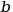
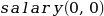

Building a simple neural network
Let’s say we want to build a model that predicts people’s salary given only their age and height.
We want this model to be extra simple, so we’ll restrict the possibilities to a linear combination of the inputs, namely age and height. You probably remember that the formula of a line is ? Our model’s formula will look like this :
The term has the same function as the  term present in the equation of a line.
Our whole model will be determined by, and only by the following parameters :
We say that our model has three parameters. Those will respectively represent :
-
: How the age contributes to the salary
-
: How the height contributes to the salary
-
: How all of this is adjusted. Think of what have to be the result of  for our model to be a good approximation of reality
Here is a graphic representing what such model looks like. The parameters here are :

At this point you might wonder.
Ok sure that’s great but how does this relate to a neural network ? Those are supposed to be difficult and this looks way too easy.
In fact what we defined can already be modelized by a very simple neural network consisting of two input nodes, age and height, and one output node, the predicted salary. Here’s a visual representation of it :

-
The input layer is what you feed into the neural network, it could be an image, a book, a song, data from a company’s sales department, etc.
-
The output layer is what the neural network predicts. It could be a sum of money, the probabilities that an image contains a car or a tree, the probability that a piece of music is rock or pop music, etc.
-
The bias is modelized like any other parameter but with a value of
 .
. -
The parameters are called weights.
In the image above, the interesting things that are actually happening are hidden, let’s see it in details :

We will discuss about the function in a later article. For now we will take , which means we can just ignore it. So what we get as output is :
Remember the formula we started with ?
It’s exactly the same ! The important things you should remember here is that :
|
Important
|
The weights are the parameters of the network. |
And :
|
Important
|
The output of the model is called the prediction. |

![$$Weight_1 =
\begin{pmatrix}
\mathbf{weight}_{1,0} \\
\mathbf{weight}_{1,1} \\
\mathbf{weight}_{1,2} \\
\mathbf{weight}_{1,3} \\
\mathbf{weight}_{1,4} \\
\mathbf{weight}_{1,5}
\end{pmatrix} =
\begin{pmatrix}
weight_{1,0,0}, weight_{1,0,1}, weight_{1,0,2}, weight_{1,0,3}, weight_{1,0,4}, weight_{1,0,5} \\
weight_{1,0,1}, weight_{1,1,1}, weight_{1,1,2}, weight_{1,1,3}, weight_{1,1,4}, weight_{1,1,5} \\
weight_{1,0,2}, weight_{1,2,1}, weight_{1,2,2}, weight_{1,2,3}, weight_{1,2,4}, weight_{1,2,5} \\
weight_{1,0,3}, weight_{1,3,1}, weight_{1,3,2}, weight_{1,3,3}, weight_{1,3,4}, weight_{1,3,5} \\
weight_{1,0,4}, weight_{1,4,1}, weight_{1,4,2}, weight_{1,4,3}, weight_{1,4,4}, weight_{1,4,5} \\
weight_{1,0,5}, weight_{1,5,1}, weight_{1,5,2}, weight_{1,5,3}, weight_{1,5,4}, weight_{1,5,5}
\end{pmatrix}$$](feed-forward-neural-network/stem-c8efcad3059571540f4f636443f84970.png)
![$$\mathbf{h}_{\color{blue}{2}} = (h_{1,0}, h_{1,1}, h_{1,2}, h_{1,3}, h_{1,4}, h_{1,5}) \cdot
\begin{pmatrix}
weight_{1,0,0}, weight_{1,0,1}, weight_{1,0,2}, weight_{1,0,3}, weight_{1,0,4}, weight_{1,0,5} \\
weight_{1,0,1}, weight_{1,1,1}, weight_{1,1,2}, weight_{1,1,3}, weight_{1,1,4}, weight_{1,1,5} \\
weight_{1,0,2}, weight_{1,2,1}, weight_{1,2,2}, weight_{1,2,3}, weight_{1,2,4}, weight_{1,2,5} \\
weight_{1,0,3}, weight_{1,3,1}, weight_{1,3,2}, weight_{1,3,3}, weight_{1,3,4}, weight_{1,3,5} \\
weight_{1,0,4}, weight_{1,4,1}, weight_{1,4,2}, weight_{1,4,3}, weight_{1,4,4}, weight_{1,4,5} \\
weight_{1,0,5}, weight_{1,5,1}, weight_{1,5,2}, weight_{1,5,3}, weight_{1,5,4}, weight_{1,5,5}
\end{pmatrix}^T$$](feed-forward-neural-network/stem-b6c9bf62386ff3ade38f32791ad7bccf.png)
![$$\mathbf{h}_{\color{blue}{2}} = (h_{1,0}, h_{1,1}, h_{1,2}, h_{1,3}, h_{1,4}, h_{1,5}) \cdot
\begin{pmatrix}
weight_{1,0,0}, weight_{1,1,0}, weight_{1,2,0}, weight_{1,3,0}, weight_{1,4,0}, weight_{1,5,0} \\
weight_{1,0,1}, weight_{1,1,1}, weight_{1,2,1}, weight_{1,3,1}, weight_{1,4,1}, weight_{1,5,1} \\
weight_{1,0,2}, weight_{1,1,2}, weight_{1,2,2}, weight_{1,3,2}, weight_{1,4,2}, weight_{1,5,2} \\
weight_{1,0,3}, weight_{1,1,3}, weight_{1,2,3}, weight_{1,3,3}, weight_{1,4,3}, weight_{1,5,3} \\
weight_{1,0,4}, weight_{1,1,4}, weight_{1,2,4}, weight_{1,3,4}, weight_{1,4,4}, weight_{1,5,4} \\
weight_{1,0,5}, weight_{1,1,5}, weight_{1,2,5}, weight_{1,3,5}, weight_{1,4,5}, weight_{1,5,5}
\end{pmatrix}$$](feed-forward-neural-network/stem-0d73edc1c4f70742110e57b9193f9c87.png)
![$$\mathbf{h}_{\color{blue}{2}} =
\begin{pmatrix}
h_{1,0} \cdot weight_{1,0,0} + h_{1,1} \cdot weight_{1,0,1} + h_{1,2} \cdot weight_{1,0,2} + h_{1,3} \cdot weight_{1,0,3} + h_{1,4} \cdot weight_{1,0,4} + h_{1,5} \cdot weight_{1,0,5} \\
h_{1,0} \cdot weight_{1,1,0} + h_{1,1} \cdot weight_{1,1,1} + h_{1,2} \cdot weight_{1,1,2} + h_{1,3} \cdot weight_{1,1,3} + h_{1,4} \cdot weight_{1,1,4} + h_{1,5} \cdot weight_{1,1,5} \\
h_{1,0} \cdot weight_{1,2,0} + h_{1,1} \cdot weight_{1,2,1} + h_{1,2} \cdot weight_{1,2,2} + h_{1,3} \cdot weight_{1,2,3} + h_{1,4} \cdot weight_{1,2,4} + h_{1,5} \cdot weight_{1,2,5} \\
h_{1,0} \cdot weight_{1,3,0} + h_{1,1} \cdot weight_{1,3,1} + h_{1,2} \cdot weight_{1,3,2} + h_{1,3} \cdot weight_{1,3,3} + h_{1,4} \cdot weight_{1,3,4} + h_{1,5} \cdot weight_{1,3,5} \\
h_{1,0} \cdot weight_{1,4,0} + h_{1,1} \cdot weight_{1,4,1} + h_{1,2} \cdot weight_{1,4,2} + h_{1,3} \cdot weight_{1,4,3} + h_{1,4} \cdot weight_{1,4,4} + h_{1,5} \cdot weight_{1,4,5} \\
h_{1,0} \cdot weight_{1,5,0} + h_{1,1} \cdot weight_{1,5,1} + h_{1,2} \cdot weight_{1,5,2} + h_{1,3} \cdot weight_{1,5,3} + h_{1,4} \cdot weight_{1,5,4} + h_{1,5} \cdot weight_{1,5,5}
\end{pmatrix}$$](feed-forward-neural-network/stem-fc85e310b2afbab1eae0ae39585626aa.png)